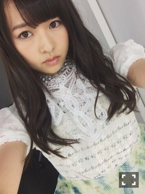
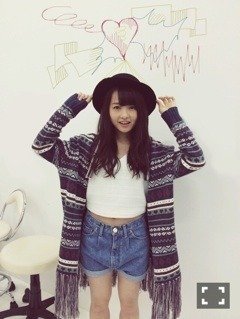

| 2014/09 19 Fri | 屋上のアイス。602回目 |
っよ！

おに魂でアンダー曲解禁してた。
「あの日 僕は咄嗟に嘘をついた」
何て呼ぼう。
あの嘘？咄嗟？
エレクトロメロディーで切ない歌詞。
ダンスもかっこいいです。
早くパフォーマンスしたい！
アンダーライブに向けて
今頑張ってます。
またみんなで話し合いました。
9thとは全く違うかたちになりそう。
この前飛鳥とBOMBの撮影しました！
私、すごい面白い髪型したから
早く見てほしい笑
飛鳥とのペアも
鉄板になってきた気がする！
嬉しいなー

表題曲の衣装
襟元が繊細。レース可愛い！
明日は名古屋全国握手会。
5thぶりの伊藤ちゃんずレーン。
寧々の地元の名古屋！
ねねころ部のみなさん
よろしくお願いします。
思いっきり楽しみましょう！

涼しくなってきて、
お洋服を考えるのがいつもより
楽しくなってきました。
まりか
コメント(501)
2014/09/19 23:48